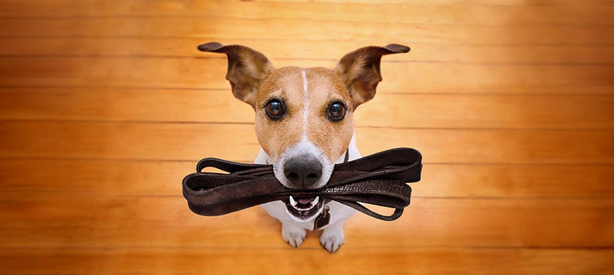

SERVICIOS DE PRIMERA PARA PERRITOS
Nuestra misión: Dar el mejor servicio a nuestros engreídos, con el cariño y la dedicación que ellos se merecen, proporcionando así confianza con los dueños, cariño y amor incondicional con nuestros amados peluditos
Bienvenido/a a nuestra empresa de paseo de perros, esta empresa fue creada hace 18 años. Durante este tiempo, nos hemos especializado en ofrecer servicios de paseo y cuidado de mascotas, brindando tranquilidad y seguridad a nuestros clientes, y felicidad y bienestar a sus peludos compañeros.
Nuestro equipo de profesionales altamente capacitados se dedica a brindar un servicio personalizado y adaptado a las necesidades de cada mascota y dueño. Nos enorgullece contar con un equipo de paseadores de perros apasionados por su trabajo, que disfrutan de pasar tiempo al aire libre con los animales, garantizando que reciban el ejercicio, la atención y el afecto que necesitan.
Nuestros Servicios:
- Paseos Individuales
- Paseos Personalizados
- Babysitter o Cuidado en casa cuando sales de viaje
- Excursiones
...Y así poder cubrir todas las necesidades de nuestros clientes y sus engreídos.
Gracias por confiar en nosotros para el cuidado de su mascota. Estamos aquí para ayudarlo y asegurarnos de que su perro reciba todo el amor y cuidado que se merece. No dude en contactarnos para más información o para reservar un servicio. ¡Esperamos verlo pronto!
Nuestra Ubicación:
Nos encontramos en la Molina-viñas